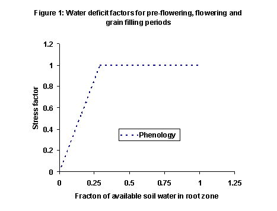

Introduction
The peanut module was developed by Michael Robertson with contributions of data from Graeme Wright, RCN Rao and Mike Bell (QDPI) Kingaroy. The module was developed from the original QNUT model (Hammer et al. 1995) with numerous enhancements. The model is described in the paper by Robertson et al. (2002). The reader is referred to the science document for the plant module for a comprehensive description of the processes simulated by APSIM – Peanut. This document outlines some peanut-specific issues that are not covered by the plant science document.
NOTABLE FEATURES OF APSIM-PEANUT
The phenology of peanut cultivars is responsive to temperature, but not to photoperiod and vernalisation. However, harvest index of peanut cultivar is adversely sensitive to long photoperiods. Water deficit effects on phenology have been incorporated. Account is taken of the energy cost involved in synthesizing the high-energy content grain in peanut. Oil content is not simulated dynamically in response to any cultivar or environmental effects. APSIM-peanut is not phosphorus-responsive, this is currently under development. Crop growth is not sensitive to waterlogging. The module does not simulate the differences between bunch and runner types in terms of canopy expansion and indeterminacy.
Goto generic Plant model documentation
CULTIVARS AND CROP CLASSES
There is one crop class.
There are 9 cultivars able to be simulated: Early bunch, Virginia bunch, Streeton, McCubbin, Chico, NC7, VB97, Florunner, Conder. Cultivars differ in terms of biomass partitioning to grain and phenology.
WATER DEFICIT AFFECTING PHENOLOGY
Observations made in Burnett district in the Southeast Queensland, Australia and elsewhere, have shown that severe water deficits delayed flowering and maturity of Virginia peanut cultivars. The APSIM peanut model has been parameterised to account for phenological sensitivity to severe water deficits at different stages and a recovery upon this stress being relieved either by rain or irrigation.
A water availability ratio is calculated by dividing actual soil water supply (sw – ll) by the potential soil water supply (dul – ll). This ratio is used in the relationship illustrated in the Figure 1 to derive a stress factor for phenological development. A factor of 0 is complete stress and 1 no stress. This enables slowing down of thermal time addition whenever water availability ratio declines to less than 0.29.
x_sw_avail_ratio = 0.16 0.29 1.0 () ! water availability
y_swdef_pheno = 0.55 1.0 1.0 () ! stress index for phenology
x_sw_avail_ratio_flower = 0.16 0.29 1.0 () ! water availability
y_swdef_pheno_flower = 0.55 1.0 1.0 ()! stress index for flowering
x_sw_avail_ratio_grainfill = 0.16 0.29 1.0 () ! water availability
y_swdef_pheno_grainfill = 0.55 1.0 1.0 () ! stress index for grain filling

PHOTOPERIOD AFFECTING HARVEST INDEX
Although peanut has been presumed to be day-neutral with respect to flowering, more recently it has been demonstrated that continuous photoperiod significantly reduces harvest index (Rowell et al. 1999). To account for photoperiod effects on harvest index, changes in maximum potential harvest index have been made. The maximum harvest index (pod yield / biomass) under continuous photoperiod (24 h) has been parameterised as 45% and under 1 h photoperiod as 75%.
VALIDATION
The APSIM –Peanut has received testing across northern Australia with factors such as cultivars, sowing date, irrigation, soil type, plant population density, and row spacing varying. Figure 2 demonstrates the performance of the module against Australian datasets.
REFERENCES
Hammer GL, Sinclair TR, Boote, KJ, Wright GC, Meinke H, and Bell MJ 1995 A peanut simulation model: I Model development and testing. Agronomy Journal 87, 1085-93.
Robertson MJ., Carberry, PS, Huth NI, Turpin JE, Probert ME, Poulton, PL, Bell M Wright GC, Yeates SJ and Brinsmead, RB 2002 Simulation of growth and development of diverse legume species in APSIM. Australian Journal of Agricultural Research 53, 429-446.
Rowell T , Mortley DG, Loretan PA, Bonsi, CK and Hill WA 1999 Continuous daily light period and temperature influence peanut yield in nutrient film technique. Crop Science 39, 1111-1114.